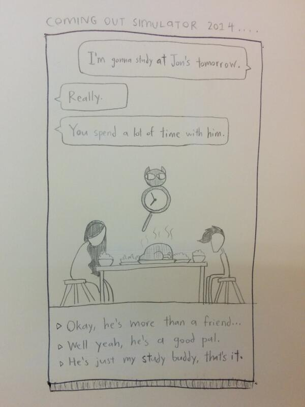
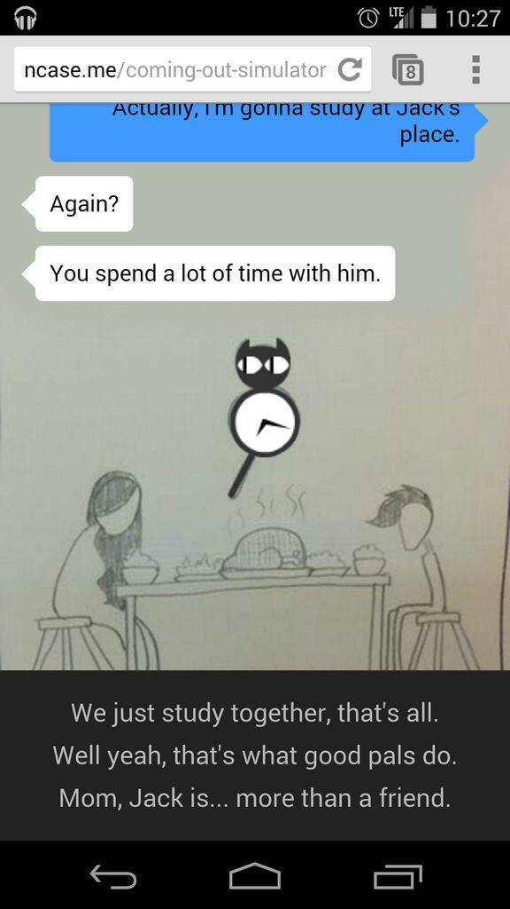
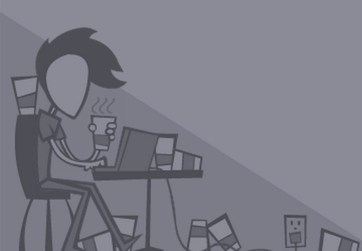
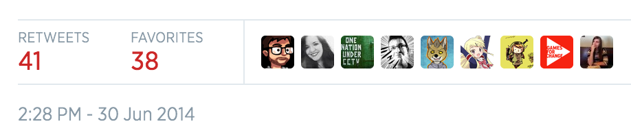
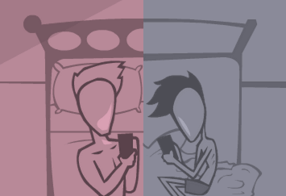

Может быть, это необходимость рассказать свою личную историю. Может быть, я хотел создать художественную повествовательную игру. Возможно, это нарциссизм. Но в любом случае, #Nar8 Game Jam, наконец, дал мне повод (и крайний срок), чтобы создать полуавтобиографическую игру, Симулятор каминг-аута 2014!
Вот, как всё произошло.
В начале...
Перед вами самый первый карандашный эскиз Каминг-аут симулятора 2014, нарисованный и опубликованный в Твиттере 9 июня.

Один этот рисунок вызвал большой интерес у пользователей! Знаешь, такая отдача, какую я только мог получить от твита.
Мой единственный эскиз действительно определит направление развития остальной части игры (хотя оно также будет развиваться). У некоторых людей имеется 300-страничная дизайнерская документация, написанная шрифтом второго размера, у меня же просто был этот поспешный карандашный рисунок. Кроме того, у меня была одна основная гипотеза игрового повествования, которую я хотел опробовать в COS2014, и это было...
Пусть каждый персонаж помнит всё.
Игра покажет вам, что умеет слышать. Почти каждый выбор диалога, каким бы незначительным он ни был, в какой-то момент будет отражён. Даже если вы кричите "Мааам?" или "Пааап?", в то время как ожидание во время ужина отражается, когда мать показывает, что она читала ваши тексты. Эти крошечные детали, я предполагаю, делают историю более органичной, чем "каждое решение меняет всё" (что также привело бы к подавляющему экспоненциальному ветвлению истории).
Первый прототип

Я опубликовал первый прототип на Пятничном Фидбэке (Feedback Friday) в реддите, и в твиттере, и сделал несколько личных плейтестов. Игра действительно была 'пустой', а у меня на руках по-прежнему оставался тот самый карандашный набросок. Ответ, который я получил, заставил меня понять, есть что-то эмоционально мощное здесь, но все еще было несколько петель (ха-ха), которые следовало развязать :
1) Варианты диалога были слишком линейными и предсказуемыми.
Они, как и в эскизе, были упорядочены одинаково: ложь, намёк, сильный намёк. То есть линейный градиент. Я исправил это в более поздних версиях, выполнив то, что делает серия игр The Walking Dead от Telltale, и установил порядок вариантов следующим образом: какой-то вариант, его противоположность и компромиссный/средний вариант.
Я бы также поставил в первую очередь вариант ответа, с помощью которого хотел "закрепить" решение. (т.е. ложь - первый вариант ответа в Обеденной сцене Часть I, затем возмущение - первый вариант в Обеденной сцене Часть II.)
2) Люди думали, что целью было совершить 'выход'.
Полагаю, название в значительной степени подразумевало это. Я рассматривал изменение названия на Queer Quest, как дань уважения Depression Quest, но "Каминг-аут симулятор 2014" просто казался смешнее и более запоминающимся, поэтому новое название застряло в моей голове.
В конце концов, я сделал две вещи. Во-первых, вступительная часть с Джеком чётко описывает основную дилемму каминг-аута. Если вы признаетесь, родители могут взбеситься, и вы не сможете быть с Джеком.
Во-вторых, я добавил несколько дополнительных строк диалога, если вы решите сказать маме, что Джек "хороший друг" или "мы больше, чем друзья". Раньше она просто обходила это и игнорировала намеки. Теперь же, она бы немедленно гаркнула, мол, если вы друзья, то вы не учитесь, а просто тусуетесь. Напротив, ничего плохого не произойдет, если вы скажете ей, что вы просто друзья по учебе, но вам придется избегать скольжения и говорить "он друг".
Быть честным и быть немедленно наказанным за это... или лгать, и осторожно ходить на цыпочках, чтобы сохранить иллюзию. В то время я ничего подобного не осознавал, но оно станет настоящим ядром игры.
Именно тогда я придумал слоган "Полуправдивая игра о полуправде", который отныне будет определять философию игры.
Второй прототип

За неделю до того, как game jam закончился, я просто провел всю неделю, перепроверяя игру. Написание нелинейной истории занимает удивительно много времени! И я даже явно избегал ветвления историй в пользу прошлых решений приправляя более позднюю историю.
Художественный стиль.
Прежде чем погрузиться в процесс написания рассказа, я должен кратко упомянуть об этом. Я очень доволен тем, как получился окончательный художественный стиль. Я не планировал, что будут монохромные цветовые схемы и прерывистая анимация, но они развились из необходимости и дизайнерских экспериментов.
Вы также заметите, что каждая сцена геометрически составлена. Просто посмотрите на сцену в кофейне! Это так...треугольно.
Концовки: ложь, правда, полуправда.
Это была полная импровизация. Я знал, что должен рассказать игроку, что произошло за четыре года между разрывом и сегодняшним днем, но не чувствовал этого... правильно?... рассказать только одну историю. Может, это был инстинкт, может, я слишком много думал, но я рад, что сделал все три концовки.
В моём каминг-аут опыте было напряжение между желанием сказать правду и ложью, чтобы защитить себя. Я не осознавал этого в то время, но я заставил повествовательную структуру моей игры отражать это напряжение... со мной, ненадежным рассказчиком, который говорит вам заранее, что они ненадежны.
Моральная двусмысленность и сочувствие моим родителям.
Я начал писать эту историю с ролями Джек = Союзник и Мать = Антагонист. Но я люблю морально неоднозначных персонажей, которые намного интереснее, так что, когда я писал всё больше и больше, то пришёл к выводу, что Джек и мама - противоположности одной монеты.
Джек хотел, чтобы я гордился своей личностью, при этом он игнорировал мою безопасность. Мама хотела, чтобы я был в безопасности, но игнорировала мою личность.
Я не виню своего бывшего за его просьбу совершить каминг-аут, я виню своих родителей за последствия. По праву так. Но с момента написания игры я немного больше сочувствую своей настоящей маме. Ближе к концу игры, когда персонаж отца возвращается домой, именно она пытается защитить тебя прежде чем отец ударит тебя.
Однако она не преуспевает. Ни в игре, ни в реальной жизни.
Мой персонаж тоже морально неоднозначен в игре. Моё любимое окончание «Обеденной сцены» - врать и говорить: «У меня был секс с Клэр». Это наименее 'наказывающая' концовка, но грустная для меня, потому что она положила начало моей привычке лгать людям по умолчанию, даже в самых простых вещах.
Я сделал наполовину настоящую игру. Я думаю, что эта привычка никогда полностью не исчезла.
Релиз!

На данном изображении единственная статистика, которую я могу заскриншотить. Симулятор Каминг-аута 2014, на момент написания статьи, высвечивался на титульной странице WebGames и Gaymers и набрал более 17,000 сыгранных раз. Всего за два дня.
Но это всего лишь статистика. Ну а то, что действительно, действительно имело значение для меня - множество трогательных ответов, которые я получал через Twitter и электронную почту. Я понятия не имел, что буду настолько тронут. Люди, которые 'закрылись в шкафу', люди, которые уже признались, родители, желавшие поддержать своих детей, бывшие парни с закрытыми взгядами... все обратились ко мне.
Сперва я беспокоился, что выпускаю столь удручающую историю про каминг-аут, ведь она может иметь негативные последствия для подростков, которые испугаются совершить признание. Но оказалось, что, действительно погрузившись в глубокий финал повествовательной истории, моя игра может охватить людей в темном месте. Я не думаю, что игра смогла бы добраться до них, если бы была полностью солнечной и радужной.
Моя игра может сказать им: "Эй, это отстой, и это будет нелегко, извини. Просто знай, что ты не одинок".
В конце...

Теперь я понимаю, что Coming Out Simulator 2014 не о том, чтобы быть странным. На самом деле, нет. Я имею в виду, вы могли бы сказать, что моя игра помогает людям сопереживать с положением геев-подростков, (И это определенно то, что я скажу "Играм за перемены" Games For Change...), но здесь нечто большее. Люди, находящиеся в шкафу со своими религиозными убеждениями, со своей политикой или странными маленькими увлечениями, которые у них есть.
Теперь я понимаю, что моя игра - это полуправда.
Это напряжение между необходимостью быть тем, кто ты есть, и скрывать это день ото дня. Речь идет о том, чтобы жить этой двойной жизнью, этим двойным сознанием, всегда осознавая, что другие думают о вас. Это смесь правды и лжи.
И теперь я понимаю... правда и ложь не являются взаимоисключающими. И я не имею в виду, что они градиент на одной оси, я подразумеваю, что правда и ложь - две совершенно разные оси. Вы можете выбрать обе стороны. Как и в моей игре, вы можете лгать, говоря правду. Или, как я сделал с моей игрой, я могу сказать правду, солгав.
Моя игра эмоционально аутентична и фактически неточна.
Я не смог бы сделать что-то настолько личное, если бы не сделал это несколько безличным, активно признавая, что все персонажи, в том числе и я сам, являются вымышленными. Чтобы встать и приблизиться, мне нужно было это расстояние.
Если вы хотите смотреть на солнце, вам понадобятся тени.
"Искусством является ложь, которая говорит правду."
~ Пикассо